تبويبات لكل ملف مفتوح في Word و Excel و PowerPoint — تنقّل بين ملفاتك بضغطة واحدة، في نافذة واحدة وزر واحد على شريط المهام.
WordExcelPowerPoint
Version 2.7
المحتويات
نظرة عامة — إيه هو البرنامج وبيعمل إيه
التبويبات في Word و Excel و PowerPoint
التحكم في التبويبات — فتح، تنقل، قفل
قائمة الكليك يمين، ألوان التبويبات، وترتيبها بالسحب
فتح ملف جديد بحركة سلسة
نافذة واحدة وزر واحد على شريط المهام
أشكال التبويبات
تبويب Tabs في الـ Ribbon
برنامج الإعدادات Office Tabs Lite Center
التثبيت وإلغاء التثبيت
المتطلبات وملاحظات
1 نظرة عامة
Office Tabs Lite إضافة لبرامج أوفيس بتحط شريط تبويبات تحت الشريط الرئيسي (Ribbon) مباشرة، فيه تبويب لكل ملف مفتوح — زي تبويبات المتصفح بالظبط. بدل ما تدوّر على ملفاتك في شريط المهام أو تفتح قائمة النوافذ، كل ملفاتك قدامك وتنتقل بينها بضغطة.
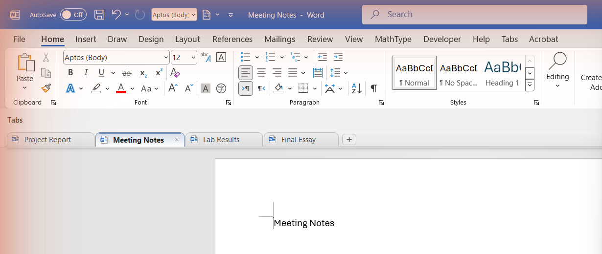
Word وفيه أربع ملفات مفتوحة — كل ملف له تبويب، والملف الحالي (Meeting Notes) مميّز.
أهم المميزات
تبويب لكل ملف مفتوح، بأيقونة نوع الملف الحقيقية.
التبويب النشط ملوّن بلون البرنامج واسمه بخط عريض.
فتح ملف جديد بزر + مع حركة سلسة، وقفل أي ملف بـ ×.
قائمة كليك يمين كاملة: حفظ، حفظ الكل، قفل الباقي، نسخ المسار، فتح المجلد…
نقطة على التبويب لو الملف فيه تغييرات مش محفوظة.
تلوين التبويبات، وترتيبها بالسحب والإفلات.
كل ملفات البرنامج في نافذة واحدة وزر واحد على شريط المهام.
3 أشكال للتبويبات تختار منها، وبرنامج إعدادات كامل.
تثبيت بملف واحد، من غير صلاحيات المسؤول (Admin).
2 التبويبات في Word و Excel و PowerPoint
الشريط بيظهر في البرامج التلاتة بنفس الطريقة، وكل برنامج بلونه: أزرق لـ Word، أخضر لـ Excel، وبرتقالي لـ PowerPoint.
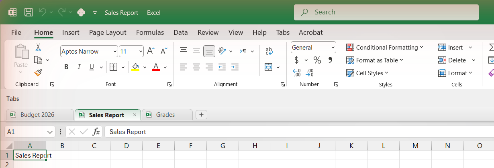
Excel — ثلاث ملفات، والملف الحالي (Sales Report) باللون الأخضر.
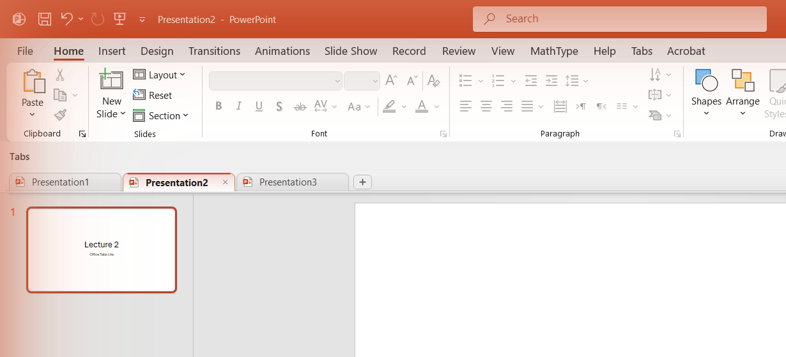
PowerPoint — ثلاث عروض، والعرض الحالي (Presentation2) باللون البرتقالي.
ترتيب التبويبات ثابت: الملف الجديد بيتضاف في الآخر، والتبويبات مش بتتحرك من أماكنها لما تنتقل بينها.
أي أمر قفل بيسأل عن الحفظ لو الملف فيه تغييرات — مفيش حاجة بتتقفل من غير ما تختار.
الألوان وعلامة التغييرات
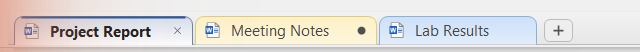
تبويب أصفر وفيه نقطة (فيه تغييرات مش محفوظة)، وتبويب أزرق.
اللون بيفضل مع الملف — لو قفلته وفتحته تاني يرجع بنفس اللون.
النقطة ● مكان علامة × معناها إن الملف فيه تغييرات مش محفوظة. أول ما تحط الماوس على التبويب، النقطة بتتحول لـ ×.
ترتيب التبويبات بالسحب
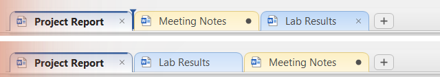
فوق: أثناء السحب، علامة زرقا بتوضح مكان الإفلات. تحت: بعد الإفلات.
5 فتح ملف جديد بحركة سلسة
لما تدوس +، تبويب New document بيدخل الشريط بحركة ناعمة ويكبر لحد حجمه الكامل، وبعدها الملف الجديد بيظهر في نفس المكان بانتقال ناعم (Crossfade) — من غير شاشة بيضا ولا وميض.
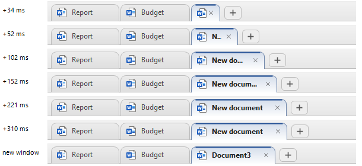
لقطات متتالية للحركة: التبويب الجديد بيكبر تدريجيًا (من 34 لـ 310 ملي ثانية)، وبعدين الملف الجديد بيظهر جاهز في مكانه.
في Excel التبويب اسمه New workbook، وفي PowerPoint اسمه New presentation.
6 نافذة واحدة وزر واحد على شريط المهام
كل ملفات البرنامج بتتجمّع وكأنها نافذة واحدة:
زر واحد على شريط المهام للبرنامج، بيعرض الملف الحالي بس — مهما كان عدد الملفات المفتوحة.
الملف اللي تنتقل له بياخد نفس مكان وحجم النافذة الحالية، فالتنقل شكله زي تبويبات المتصفح.
لما تصغّر النافذة (Minimize)، كل الملفات بتتصغّر مع بعض.
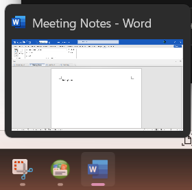
معاينة واحدة على شريط المهام رغم إن فيه 4 ملفات Word مفتوحة.
النوافذ مش بتتخفي أبدًا — بس بتتجمّع. لو قفلت الميزة دي من الإعدادات، كل ملف يرجع له زرّه على شريط المهام زي الأول.
7 أشكال التبويبات
تقدر تختار شكل التبويبات من برنامج الإعدادات (صفحة Appearance)، والتغيير بيظهر في أوفيس خلال ثواني من غير ما تقفله.
Rounded
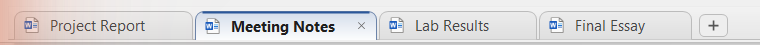
Trapezoid
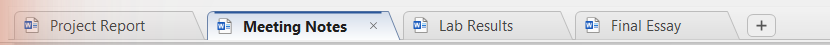
Flat
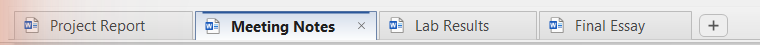
وكمان تقدر تخفي أيقونات الملفات من على التبويبات لو حابب شكل أبسط.
8 تبويب Tabs في الـ Ribbon
الإضافة بتضيف تبويب Tabs في الـ Ribbon نفسه، وفيه:
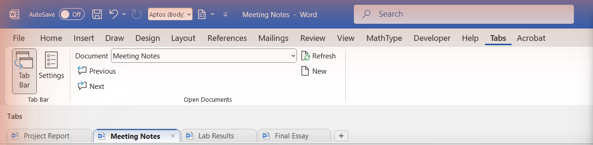
تبويب Tabs في الـ Ribbon.
Tab Bar
إظهار أو إخفاء شريط التبويبات.
Settings
يفتح برنامج الإعدادات Office Tabs Lite Center.
Document
قائمة بكل الملفات المفتوحة للانتقال لأي واحد منها.
Previous / Next
الملف السابق / التالي.
New
ملف جديد.
9 برنامج الإعدادات Office Tabs Lite Center
تفتحه من اختصار سطح المكتب أو قائمة ابدأ، أو من زر Settings في تبويب Tabs. فيه 4 صفحات:
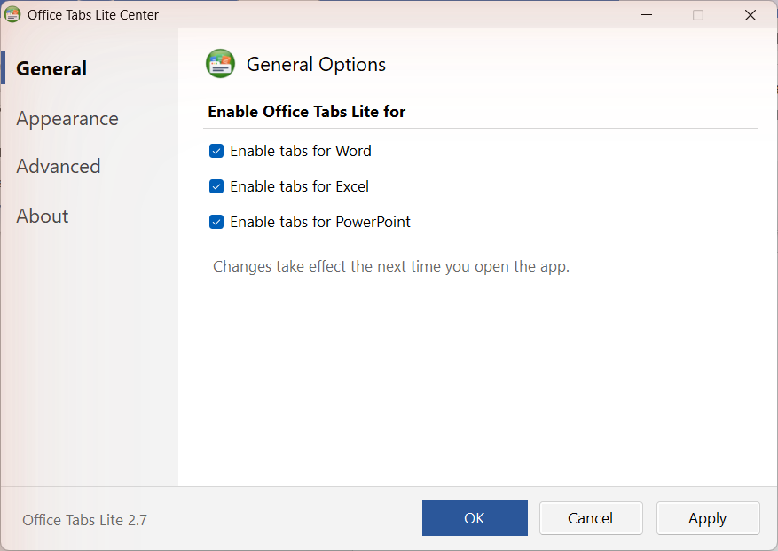
General — تشغيل أو إيقاف التبويبات لكل برنامج لوحده.
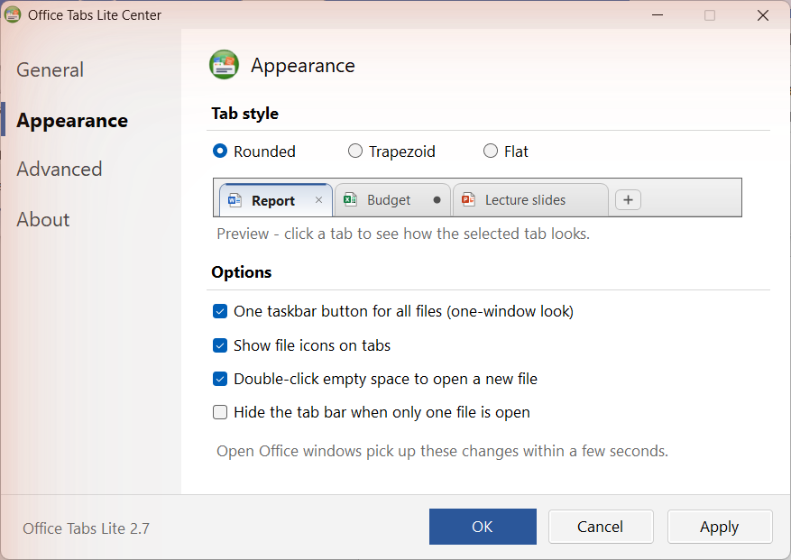
Appearance — شكل التبويبات مع معاينة حيّة، والاختيارات.
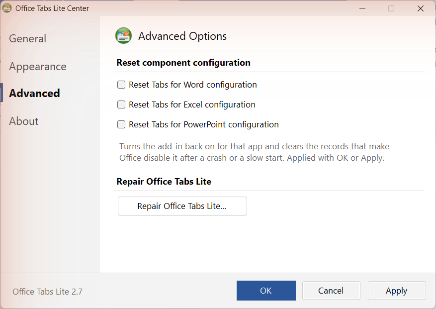
Advanced — إعادة ضبط الإضافة لبرنامج معين، وزر الإصلاح.
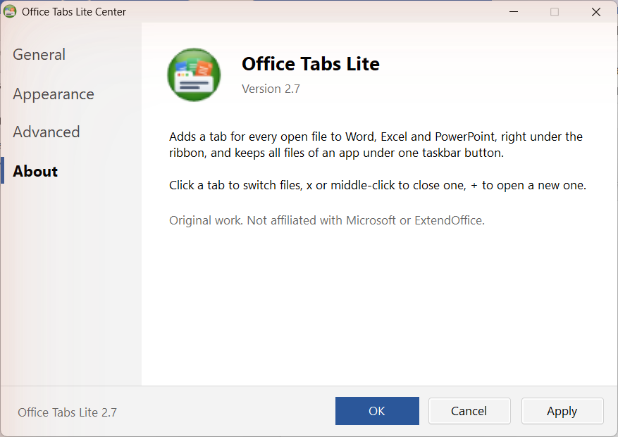
About — اسم البرنامج ورقم النسخة.
اختيارات صفحة Appearance
One taskbar button for all files — زر واحد ونافذة واحدة لكل الملفات.
Show file icons on tabs — أيقونة نوع الملف على كل تبويب.
Double-click empty space to open a new file — دبل كليك لملف جديد.
Hide the tab bar when only one file is open — إخفاء الشريط لو فيه ملف واحد بس مفتوح، ويرجع تلقائي أول ما تفتح ملف تاني.
صفحة Advanced
Reset: لو أوفيس عطّل الإضافة (مثلًا بعد ما البرنامج اتقفل فجأة)، اختار البرنامج واضغط OK — الإضافة بترجع تشتغل.
Repair: بيعيد تسجيل الإضافة من النسخة المتثبّتة لو حصل أي عطل.
10 التثبيت وإلغاء التثبيت
التثبيت
اقفل Word و Excel و PowerPoint.
شغّل OfficeTabsLite-Setup.exe واضغط OK. لو عندك نسخة قديمة، هيسألك: اختار Yes للتحديث.
افتح أي برنامج أوفيس — هتلاقي شريط التبويبات تحت الـ Ribbon.
لو ظهرت رسالة Windows protected your PC: اضغط More info ثم Run anyway. الرسالة دي بتظهر لأي برنامج مش موقّع رقميًا، ومش معناها إن فيه مشكلة.
التثبيت بيضيف كمان اختصار Office Tabs Lite Center على سطح المكتب وفي قائمة ابدأ، وبيظهر البرنامج في الإعدادات ← التطبيقات زي أي برنامج.
إلغاء التثبيت
من الإعدادات ← التطبيقات ← Office Tabs Lite ← إلغاء التثبيت،
أو شغّل OfficeTabsLite-Setup.exe تاني واختار No.
11 المتطلبات وملاحظات
المتطلب
التفاصيل
نظام التشغيل
Windows 10 أو Windows 11
أوفيس
Microsoft Office 2013 أو أحدث (Word, Excel, PowerPoint). تمت التجربة على Office 2024 نسخة 64 بت.
صلاحيات
مش محتاج صلاحيات المسؤول — التثبيت للمستخدم الحالي فقط.
.NET Framework
4.x — موجود جاهز في Windows 10 و 11.
ملاحظات
فوق التبويبات فيه شريط صغير مكتوب عليه Tabs — ده شريط أوفيس نفسه للوحات الإضافات، ومينفعش يتشال. لو قفلته بالـ × اللي عليه، رجّعه من زر Tab Bar.
فتح ملف جديد بياخد حوالي ثانية — نص الوقت ده هو وقت أوفيس نفسه في إنشاء الملف.
Office Tabs Lite 2.7 — عمل أصلي، ليس تابعًا لـ Microsoft أو ExtendOffice.